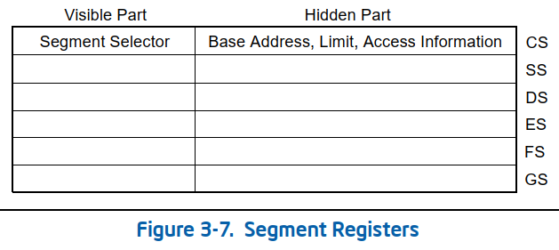

Segment registers (see x86 memory segmentation):
- CS - Code Segment
- DS - Data Segment
- SS - Stack Segment
- ES - Extra Segment
- FS - Frame Segment
- GS - General Segment

- Each segment register is 16 bit long Segment Selector with a visible part and another hidden part.
- SR's are primarly used for 32-bit mode, in which only 4GB of memory can be addressed (32bits->4gb).
- The x86-64 architecture have largely dropped support for segmentation in 64-bit mode.
- When accessing memory in 32 bit, segment selector (eg register) comes first, than an offset.
- DS segment is the default segment when storing data in memory or loading data from memory.
- Segment override is generally handled with a colon “:” operator, to overwrite the default DS. (MOV ES:[EBX], EAX).
- SR's can be modifiyed with mov, push and pop instructions (kernel mode only)

Every segment register has a “visible” part and a “hidden” part. (The hidden part is sometimes referred to as a “descriptor cache” or a “shadow register.”) When a segment selector is loaded into the visible part of a segment register, the processor also loads the hidden part of the segment register with the base address, segment limit, and access control information from the segment descriptor pointed to by the segment selector. The information cached in the segment register (visible and hidden) allows the processor to translate addresses without taking extra bus cycles to read the base address and limit from the segment descriptor. Vol 3.4.3
*** remark about ES FS and GS names***
The names "ES" (Extra Segment), "FS" (Frame Segment), and "GS" (General Segment) are commonly used to refer to the segment registers in the x86 architecture. These names are widely recognized and have been used in various programming references, books, and online resources. They are not specific abbreviations defined by an official x86 architecture specification.
A bit more about segment registers:- rep movsb %ds:(%rsi),%es:(%rdi)
"The segment registers are now used as selectors out of the Global Descriptor (or possibly local descriptor) table, which is used to define memory regions and their read/write permissions."
"EDI will use the ES selector. and ESI will use the DS selector."